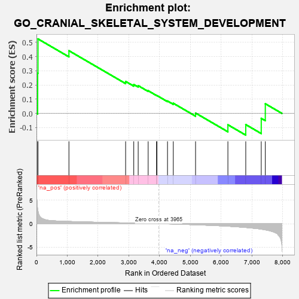
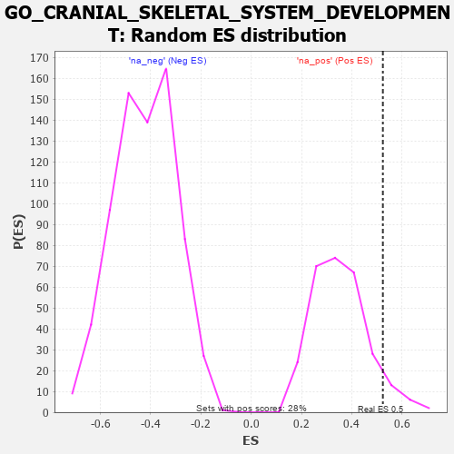

| | | Dataset | 7d |
| Phenotype | NoPhenotypeAvailable |
| Upregulated in class | na_pos |
| GeneSet | GO_CRANIAL_SKELETAL_SYSTEM_DEVELOPMENT |
| Enrichment Score (ES) | 0.52376753 |
| Normalized Enrichment Score (NES) | 1.4802096 |
| Nominal p-value | 0.06690141 |
| FDR q-value | 0.30676606 |
| FWER p-Value | 1.0 |
Table: GSEA Results Summary

Fig 1: Enrichment plot: GO_CRANIAL_SKELETAL_SYSTEM_DEVELOPMENT
Profile of the Running ES Score & Positions of GeneSet Members on the Rank Ordered List
| PROBE | GENE SYMBOL | GENE_TITLE | RANK IN GENE LIST | RANK METRIC SCORE | RUNNING ES | CORE ENRICHMENT | | 1 | SIX2 | | | 40 | 3.152 | 0.2826 | Yes |
| 2 | TGFB3 | | | 49 | 2.654 | 0.5238 | Yes |
| 3 | MEF2C | | | 1054 | 0.473 | 0.4408 | No |
| 4 | FGFR2 | | | 2895 | 0.167 | 0.2248 | No |
| 5 | FOXN3 | | | 3159 | 0.129 | 0.2035 | No |
| 6 | SMAD3 | | | 3303 | 0.105 | 0.1951 | No |
| 7 | RIC1 | | | 3627 | 0.055 | 0.1595 | No |
| 8 | NIPBL | | | 3900 | 0.010 | 0.1262 | No |
| 9 | FREM1 | | | 3912 | 0.008 | 0.1256 | No |
| 10 | PAX5 | | | 4255 | -0.051 | 0.0872 | No |
| 11 | SETD2 | | | 4443 | -0.084 | 0.0714 | No |
| 12 | TBX1 | | | 5166 | -0.241 | 0.0026 | No |
| 13 | SMAD2 | | | 6216 | -0.541 | -0.0799 | No |
| 14 | WDR19 | | | 6796 | -0.812 | -0.0785 | No |
| 15 | MSX2 | | | 7299 | -1.171 | -0.0348 | No |
| 16 | LHX1 | | | 7431 | -1.305 | 0.0679 | No |
Table: GSEA details [plain text format]

Fig 2: GO_CRANIAL_SKELETAL_SYSTEM_DEVELOPMENT: Random ES distribution
Gene set null distribution of ES for GO_CRANIAL_SKELETAL_SYSTEM_DEVELOPMENT